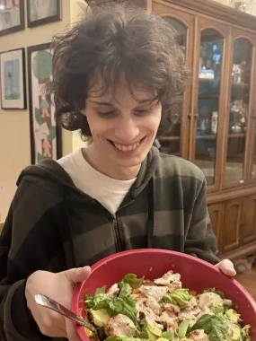

|
Michael Mihaley I'm an undergraduate at Columbia University (grad. may 2027) studying computer science with a focus on robotics. I'm currently interning at the NYIT RAIL lab focusing on reinforcement learning and zero-shot grasping of soft objects, advised by Feng Han. Previously, I interned at Columbia's RoboPIL lab focusing on low-latency teleop systems and imitation learning, advised by Yunzhu Li and Yixuan Wang. I'm an adjunct faculty member at the Rudolf Steiner School and also independently tutor students for the AP Computer Science A Exam. GitHub / CV / LinkedIn. Feel free to reach out: mjm2442 [at] columbia [dot] edu |
 |
|
Misc.
In my free time, I enjoy reading the latest research on AI safety and interpretability and am a CAIAC policy fellow.
My favorite anime is Hunter × Hunter
Thanks to Jon Barron for the table styles! |